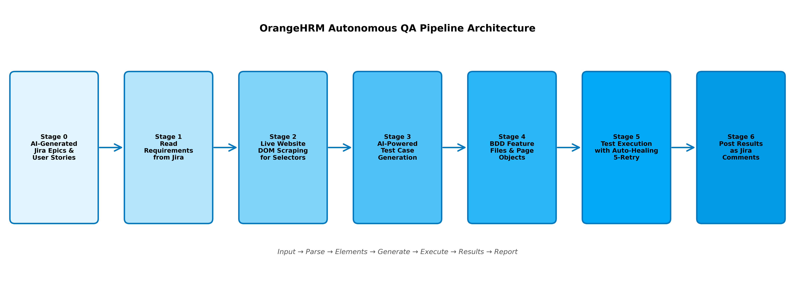
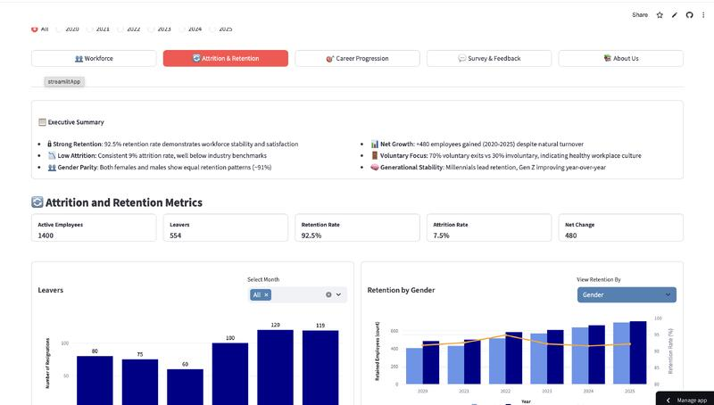

Featured Projects & Frameworks
Real-world implementations of AI-augmented test engineering, enterprise test architecture, and analytics.
OrangeHRM Autonomous AI QA Pipeline
An autonomous 7-stage AI-driven QA pipeline that ingests Jira requirements, inspects live DOM state, dynamically generates BDD test suites and Page Object Models, and executes tests with intelligent self-healing logic. Enables complete autonomy with human-in-the-loop review.

7-Stage Autonomous Architecture:
- 80% reduction in manual test case drafting and boilerplate test script authoring time.
- Resilient element detection prevents brittle locator breakages through live DOM analysis.
- Full traceability maintained from Jira user story down to test step execution.
Prompt Chaining for Negative Test Case Generation
A specialized Python implementation utilizing prompt chaining techniques with LLM APIs to systematically construct high-severity negative test scenarios, boundary validations, and precise expected error messages.
import openai
def generate_negative_test_cases(prompt: str) -> str:
"""Systematically constructs negative validation scenarios via prompt chaining."""
response = openai.chat.completions.create(
model="gpt-4o-mini",
messages=[
{"role": "system", "content": "You are a Senior QA Test Architect. Formulate exhaustive negative test cases and expected error states."},
{"role": "user", "content": prompt}
],
temperature=0.2
)
return response.choices[0].message.content
# Example Execution
prompt = "Formulate negative test cases with boundary conditions for multi-factor login."
print(generate_negative_test_cases(prompt))By enforcing low temperature and persona-primed prompt templates, this pattern produces deterministic, high-coverage boundary scenarios that standard manual test drafting frequently overlooks.
Workforce Intelligence & HR Analytics Dashboard
Developed as part of my graduate coursework at Mapúa University, this interactive dashboard applies data storytelling and analytical design patterns to uncover workforce attrition trends, performance distributions, and organizational metrics.

Event Data Collection & Reunion Survey App (PWA)
A mobile-optimized, cross-platform Progressive Web Application (PWA) developed as an exploratory data collection prototype for graduate coursework. Built with React and Vite, the app features responsive survey workflows, Google Sign-In authentication, and an analytical Forecast Tab that tracks cumulative response trends, calibrates turnout estimates against historical benchmarks, and projects dynamic budget requirements.
Forecast & Analytics View: Real-time response trends, historical turnout blending (74% Yes rate adjusted for 2022 actuals), and cost-per-attendee budget calculations.
Multi-Tenant Regression & BDD Test Architecture
Designed and maintained a scalable BDD regression test suite using Gherkin syntax for complex multi-tenant SaaS and insurance distribution platforms. Formulated risk-based priority matrices across policy lifecycles (submission, quoting, binding, billing) to ensure thorough coverage of high-risk workflows and protect production release stability.
Mission-Critical UAT & Production Sign-Off Framework
Led end-to-end user acceptance testing governance across 40+ sprints for enterprise healthcare copay systems and airline payment processing. Established formal sign-off gates, audit trails, and multi-currency payment validation protocols that safeguarded core transaction revenues.